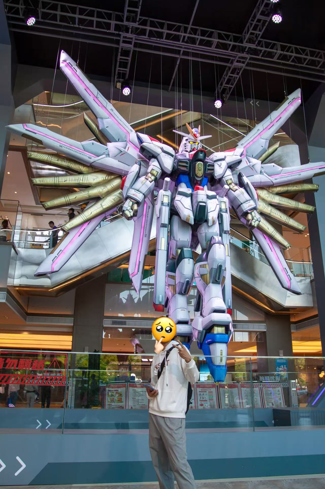
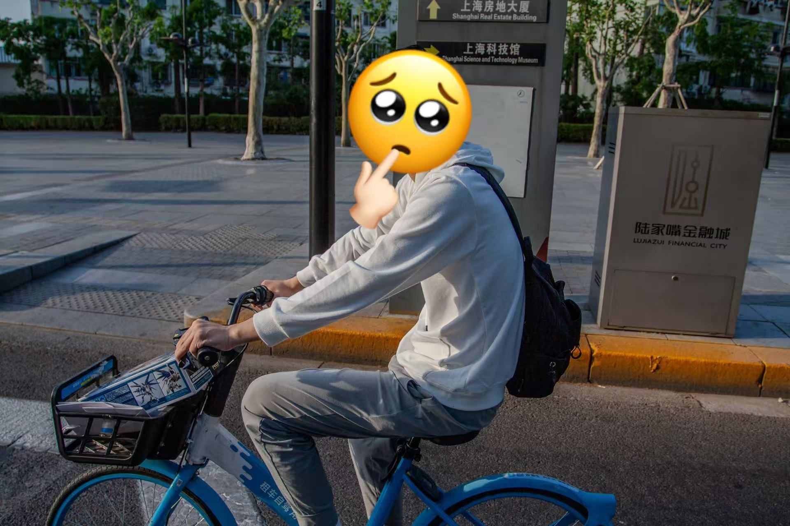

Today is the second day in Shanghai with Yuxi and Eric — and our first day out having fun.
Around noon, Eric and I took a taxi to Yuxi’s sister’s place, where he was staying. Finally, the three of us were together in Shanghai!
After we met up, we took the metro to see the Gundam statue in Shanghai. It’s located in a park next to a popular mall called LaLaport. Yuxi took a photo with the !WAITING!.
Then we went into the mall — and there were even more statues inside! The back of !WAITING! had already caught our eyes, but the front looked even coooooler!

There’s also a Gundam-themed store inside, with many Gundam models on display.
After dinner, we headed to the Pudong New Area — Shanghai’s CBD and the wealthiest district in China. We wanted to experience the concrete jungle. So we rented shared bikes and started a 10-kilometer (6-mile) ride that lasted over an hour.

Once we reached Pudong, we were welcomed by the three most iconic towers in Lujiazui, Shanghai.

From left to right: Jin Mao Tower (421m / 1,380 ft), Shanghai World Financial Center (492m / 1,600 ft), and Shanghai Tower (632m / 2,000 ft).
Standard Chartered! One of my favorite banks in the world!
Later we visited the Shanghai IFC Mall, one of the busiest commercial areas in China.
Apple Pudong is located in the square outside the mall. Its above-ground section is a stunning cylindrical building made entirely of giant glass panels. Unfortunately, that entrance was temporarily closed, so we had to enter through another one.
After visiting Apple Pudong, Yuxi left to be with his family. Eric and I left Pudong to grab something to eat, and then returned again later. We also helped a couple from Jamaica find a Chinese restaurant — what a kind guy xD!
By that time, around 8 PM, the crowds had grown to insane levels. There was no way for us to cross the Huangpu River and meet up with Yuxi again. So we headed back to our hotel, a bit disappointed.
Later, Yuxi sent us some photos of the Bund and the river.
The Bund features many European-style buildings — more specifically, European Neoclassical architecture. One example is the building of SPD Bank (Shanghai Pudong Development Bank).
Back at the hotel, Eric opened Douyin (Chinese TikTok), and we were shocked by the crazy crowds at the Bund!
Honestly, it was a good thing we didn’t go 🤓
About this Post
This post is licensed under CC BY-NC 4.0.